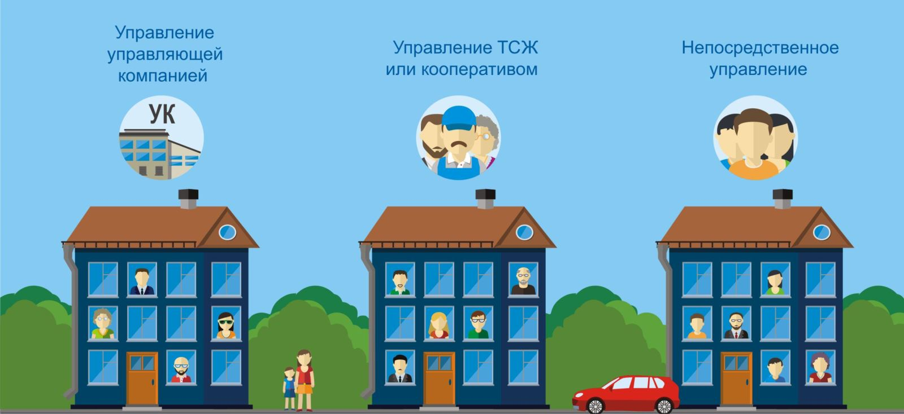
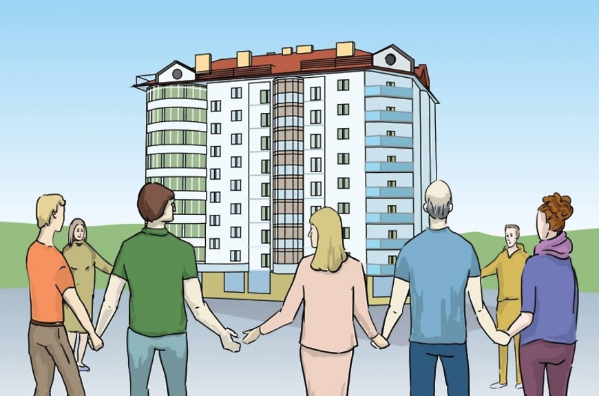
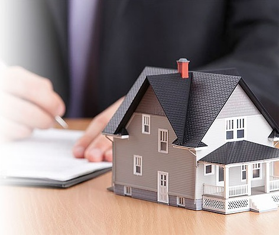

Управление многоквартирными домами
Управление многоквартирным домом должно обеспечивать благоприятные и безопасные условия проживания граждан, надлежащее содержание общего имущества в многоквартирном доме, решение вопросов пользования указанным имуществом, а также предоставление коммунальных услуг гражданам, проживающим в таком доме, или постоянную готовность инженерных коммуникаций и другого оборудования, входящих в состав общего имущества собственников помещений в многоквартирном доме, к предоставлению коммунальных услуг. Правительство Российской Федерации устанавливает стандарты и правила деятельности по управлению многоквартирными домами.
Надлежащее содержание общего имущества собственников помещений в многоквартирном доме должно осуществляться в соответствии с требованиями законодательства Российской Федерации, в том числе в области обеспечения санитарно-эпидемиологического благополучия населения, о техническом регулировании, пожарной безопасности, защите прав потребителей, и должно обеспечивать:
- соблюдение требований к надежности и безопасности многоквартирного дома;
- безопасность жизни и здоровья граждан, имущества физических лиц, имущества юридических лиц, государственного и муниципального имущества;
- доступность пользования помещениями и иным имуществом, входящим в состав общего имущества собственников помещений в многоквартирном доме;
- соблюдение прав и законных интересов собственников помещений в многоквартирном доме, а также иных лиц;
- постоянную готовность инженерных коммуникаций, приборов учета и другого оборудования, входящих в состав общего имущества собственников помещений в многоквартирном доме, к осуществлению поставок ресурсов, необходимых для предоставления коммунальных услуг гражданам, проживающим в многоквартирном доме, в соответствии с правилами предоставления, приостановки и ограничения предоставления коммунальных услуг собственникам и пользователям помещений в многоквартирных домах и жилых домах, установленными Правительством Российской Федерации.
 Собственники помещений в многоквартирном доме обязаны выбрать один из способов управления многоквартирным домом:
- непосредственное управление собственниками помещений в многоквартирном доме, количество квартир в котором составляет не более чем тридцать;
- управление товариществом собственников жилья либо жилищным кооперативом или иным специализированным потребительским кооперативом;
- управление управляющей организацией.
Непосредственное управление собственниками помещений в многоквартирном доме
При осуществлении непосредственного управления многоквартирным домом собственниками помещений в данном доме лица, выполняющие работы по содержанию и ремонту общего имущества в многоквартирном доме, обеспечивающие холодное и горячее водоснабжение и осуществляющие водоотведение, электроснабжение, газоснабжение (в том числе поставки бытового газа в баллонах), отопление (теплоснабжение, в том числе поставки твердого топлива при наличии печного отопления), обращение с твердыми коммунальными отходами, несут ответственность перед собственниками помещений в данном доме за выполнение своих обязательств в соответствии с заключенными договорами, а также в соответствии с установленными Правительством Российской Федерации правилами содержания общего имущества в многоквартирном доме, правилами предоставления, приостановки и ограничения предоставления коммунальных услуг собственникам и пользователям помещений в многоквартирных домах и жилых домах.
Управление товариществом собственников жилья либо жилищным кооперативом или иным специализированным потребительским кооперативом
 При управлении многоквартирным домом товариществом собственников жилья либо жилищным кооперативом или иным специализированным потребительским кооперативом указанные товарищество или кооператив несут ответственность за содержание общего имущества в данном доме в соответствии с требованиями технических регламентов и установленных Правительством Российской Федерации правил содержания общего имущества в многоквартирном доме, за предоставление коммунальных услуг в зависимости от уровня благоустройства данного дома, качество которых должно соответствовать требованиям установленных Правительством Российской Федерации правил предоставления, приостановки и ограничения предоставления коммунальных услуг собственникам и пользователям помещений в многоквартирных домах и жилых домах, или в случаях, предусмотренных статьей 157.2 настоящего Кодекса, за обеспечение готовности инженерных систем. Указанные товарищество или кооператив могут оказывать услуги и (или) выполнять работы по содержанию и ремонту общего имущества в многоквартирном доме своими силами или привлекать на основании договоров лиц, осуществляющих соответствующие виды деятельности. При заключении договора управления многоквартирным домом с управляющей организацией указанные товарищество или кооператив осуществляют контроль за выполнением управляющей организацией обязательств по такому договору, в том числе за оказанием всех услуг и (или) выполнением работ, обеспечивающих надлежащее содержание общего имущества в данном доме, за предоставлением коммунальных услуг в зависимости от уровня благоустройства данного дома, качество которых должно соответствовать требованиям установленных Правительством Российской Федерации правил предоставления, приостановки и ограничения предоставления коммунальных услуг собственникам и пользователям помещений в многоквартирных домах и жилых домах.
Управление управляющей организацией
Способ управления не выбран
 При управлении многоквартирным домом управляющей организацией она несет ответственность перед собственниками помещений в многоквартирном доме за оказание всех услуг и (или) выполнение работ, которые обеспечивают надлежащее содержание общего имущества в данном доме и качество которых должно соответствовать требованиям технических регламентов и установленных Правительством Российской Федерации правил содержания общего имущества в многоквартирном доме, за предоставление коммунальных услуг в зависимости от уровня благоустройства данного дома, качество которых должно соответствовать требованиям установленных Правительством Российской Федерации правил предоставления, приостановки и ограничения предоставления коммунальных услуг собственникам и пользователям помещений в многоквартирных домах и жилых домах, или в случаях, предусмотренных статьей 157.2 настоящего Кодекса, за обеспечение готовности инженерных систем.